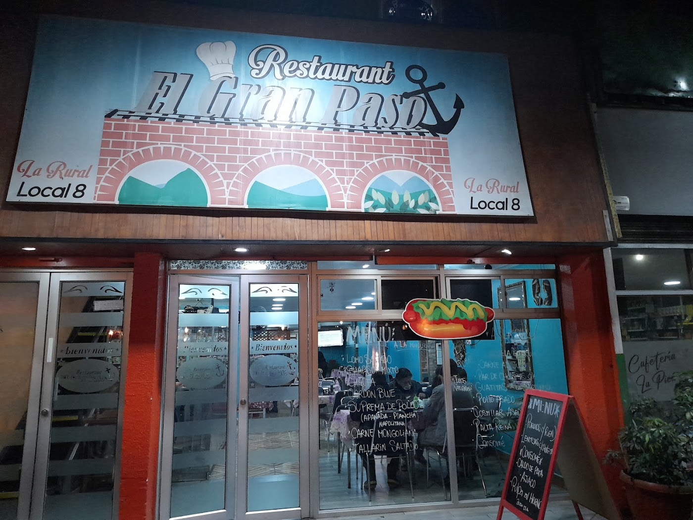
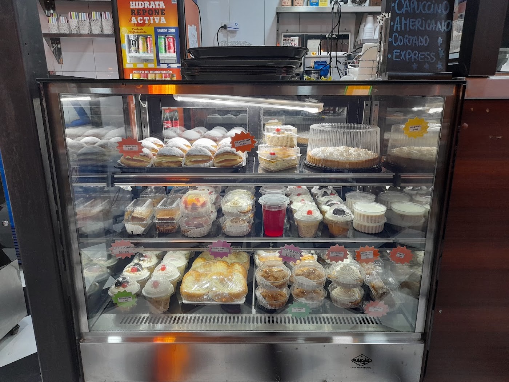
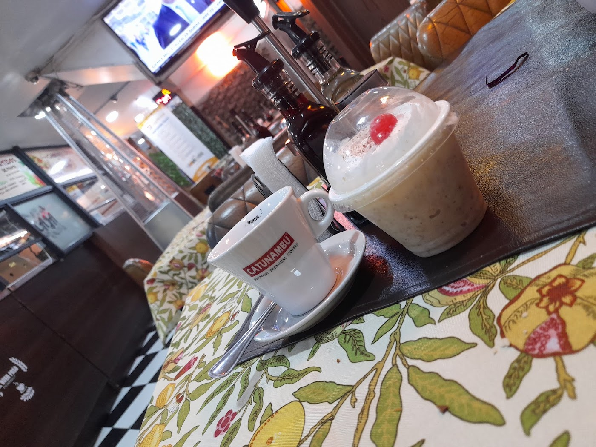

24 horas, de verdad
Abierto las 24 horas. En un mercado mayorista que se mueve de madrugada, eso no es un detalle: es el negocio.

Café y panadería · Mercado Lo Valledor · 24 horas
Café, pastelería y sándwiches en el Local 8 del Mercado Lo Valledor. Las 24 horas, todos los días.
Abierto las 24 horas. En un mercado mayorista que se mueve de madrugada, eso no es un detalle: es el negocio.
"El mejor lugar para tomar un rico café con un pastelito, 10 de 10".
"Lo mejor dentro del Mercado Lo Valledor: desde que ingresas se nota, en el local físico, sus decoraciones, la amabilidad de quienes atienden."
El Gran Paso es café y panadería dentro del Mercado Lo Valledor, en Pedro Aguirre Cerda. Café, pastelería, sándwiches y comida caliente — y está abierto las 24 horas.
Con 4.4 estrellas, lo que dicen nuestras reseñas va por dos lados: el producto ("unos ricos postres, sándwiches y comida para este frío") y el local en sí ("desde que ingresas se nota… sus decoraciones, la amabilidad de quienes atienden y por supuesto sus preparaciones").


Nuestra carta, con sus precios. Los sándwiches se preparan en pan de fabricación propia.
"Lo mejor dentro del Mercado Lo Valledor. Desde que ingresas se nota: en el local físico, sus decoraciones, la amabilidad de quienes atienden y por supuesto sus preparaciones."
"El mejor lugar para tomar un rico café con un pastelito. 10 de 10."
"Unos ricos postres, sándwiches y comida para este frío. Delicioso todo, súper recomendado."
La Rural 06, Lo Valledor
Pedro Aguirre Cerda, Región Metropolitana
—